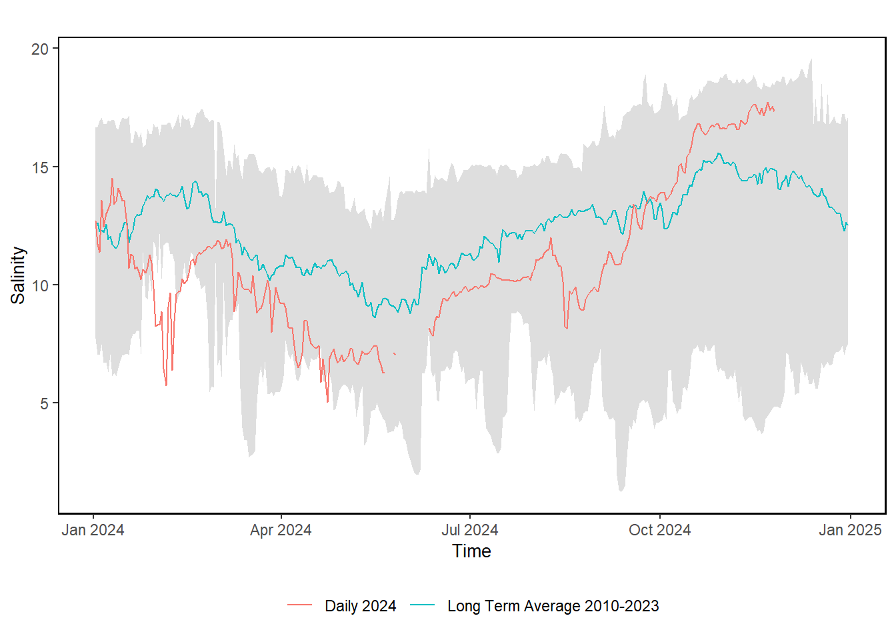

57 Chesapeake Bay Salinity
Last updated July 23, 2026
Description: This data is collected from the CBIBS buoy system.
Contributor(s): Charles Pellerin
Affiliations: NEFSC
Indicator Family:
Indicator Category:
Synthesis Theme:
57.1 Introduction to Indicator
Salinity data from the Chesapeake Bay Interpretive Buoy System (CBIBS) are used to monitor water conditions and identify conditions capable of impacting the Chesapeake Bay marine ecosystem.
57.2 Key Results and Visualizations
The salinity data, when compared to the 2010-2023 historical average reveals a distinct pattern. In 2024, Salinity observations are lower than the historical averages from February to October and higher than historical averages during the fall (around October to November). This variation in salinity is likely due to increased rain events and freshwater input during spring and early summer. Spring 2024 salinity observations exceeded historical minimum salinity values, and remained below average throughout the summer. In early Fall, 2024 averages surpassed historical averages.
Mid-Atlantic

57.3 Implications
Since 2007, the Chesapeake Bay Interpretive Buoy System (CBIBS) has provided invaluable, high-quality water quality data, underscoring the critical need for continuous monitoring of key parameters. The system has consistently collected robust data on meteorological, water quality and oceanographic parameters. While the system experienced maintenance challenges inherent in complex observational systems deployed in dynamic marine environments, the vast majority of the data collected is reliable and paints a picture of ongoing changes in Chesapeake Bay. This publicly available resource provides a high degree of confidence for Chesapeake Bay stakeholders, and is a vital tool for informing evidence-based environmental management decisions. The long-term nature of the CBIBS dataset allows for the detection of long-term trends in water column habitat and the assessment of restoration efforts.
Salinity averages during the 2024 season were consistently lower than historical averages from 2008 - 2023 across all locations. Lower salinity during much of the summer was unexpected because much of the region was experiencing drier-than-normal weather. Despite this, the salinity levels generally remained within the historical range, with the exception of Annapolis and Gooses Reef. This shift in salinity could have important implications for living resources in the bay, particularly for species that are sensitive to changes in salinity, such as oysters, crabs, and various fish species. Lower salinity in the spring was likely driven by higher precipitation and flow. Years with high flow are typically better for striped bass spawning, however, the annual surveys of juvenile striped bass in Maryland and Virginia showed juvenile indexes below the long-term average. Generally, low salinities in spring and summer can suppress oyster growth and reproduction (number of surviving spat) both in the wild and at hatcheries. Oyster survey data was not available at the time this report was drafted so effects on oysters cannot be correlated to the salinity observations at this time. Low salinity across the Chesapeake Bay allows invasive blue catfish to inhabit larger areas in the Bay. Invasive blue catfish prey on striped bass, blue crabs and other important finfish.
57.4 Indicator statistics
Spatial scale: Main stem of the Chesapeake Bay
Temporal scale: Annual
Variable definitions
57.5 Get the data
Point of contact: Charles Pellerin (charles.pellerin@noaa.gov)
ecodata dataset: ecodata::ch_bay_sal
Tech Doc link: https://noaa-edab.github.io/tech-doc/ch_bay_sal.html